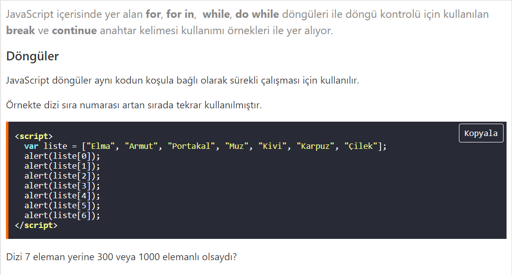
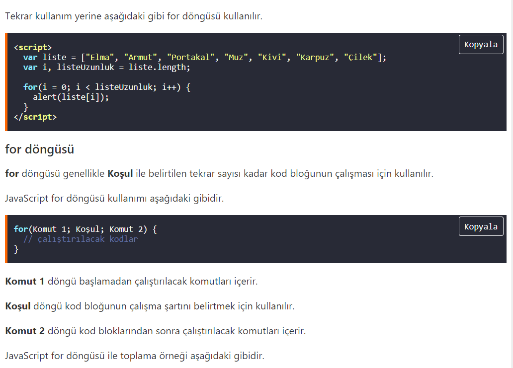
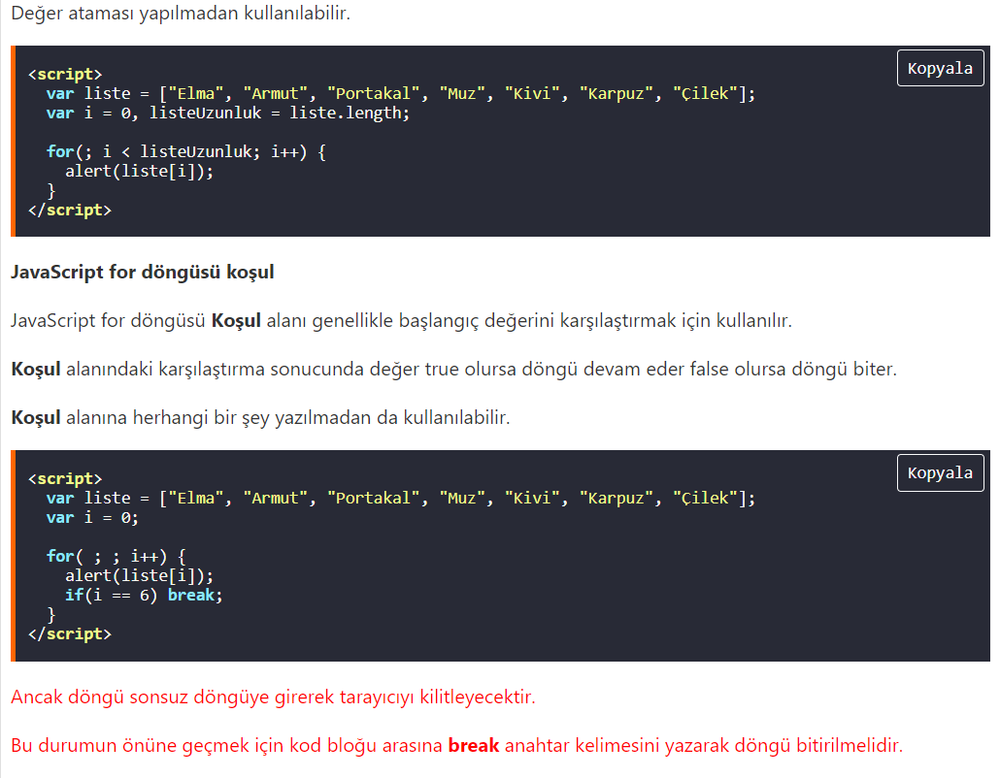
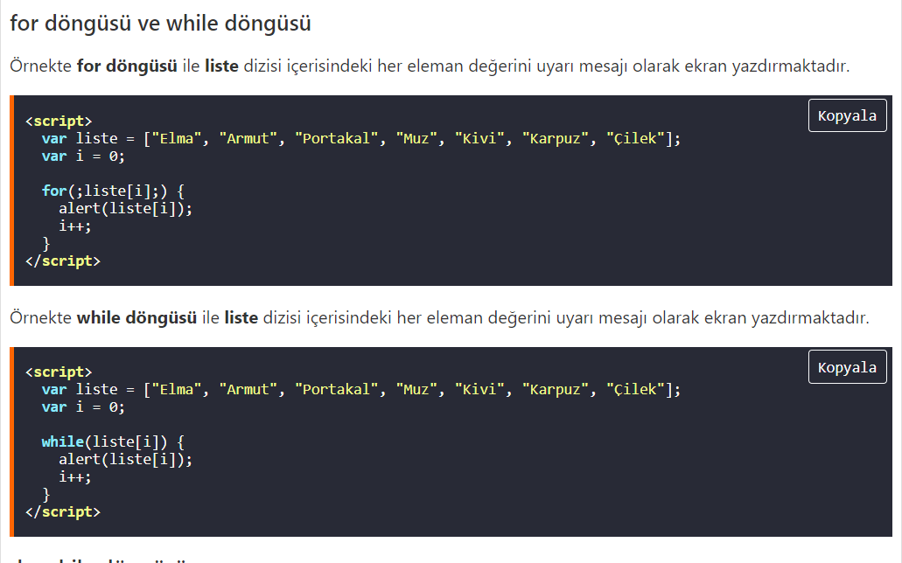
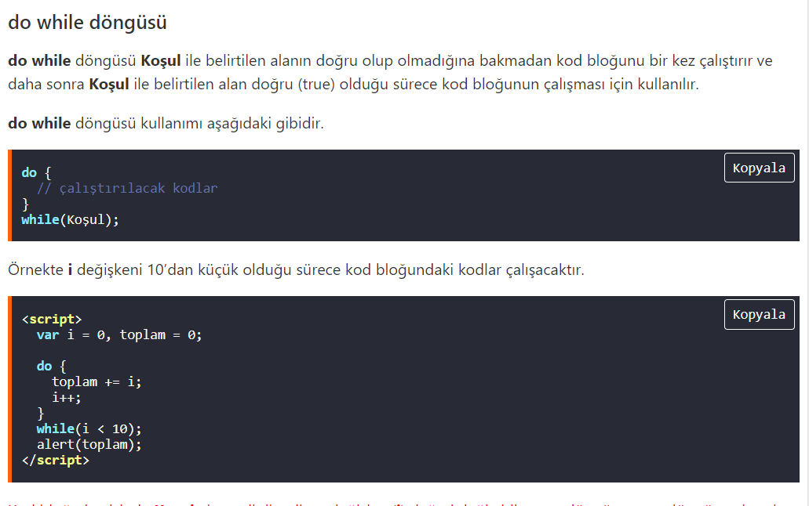
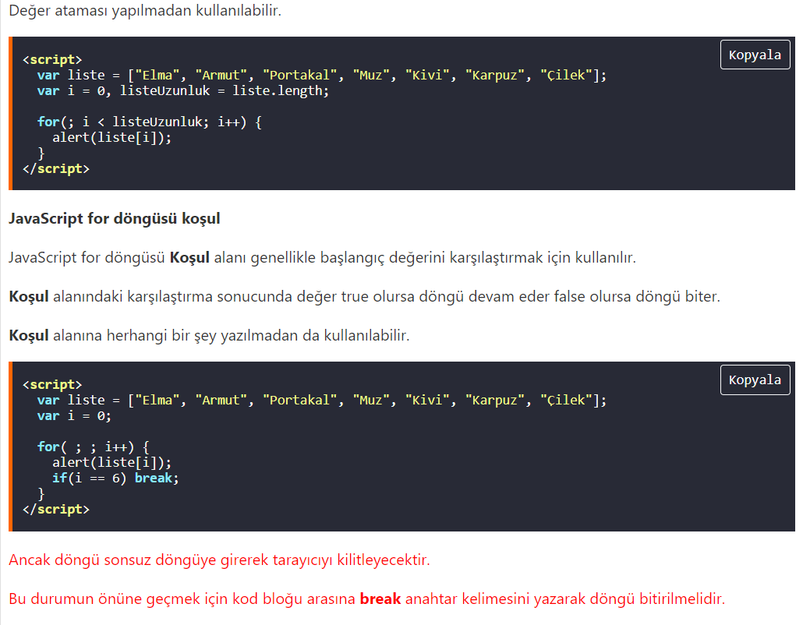
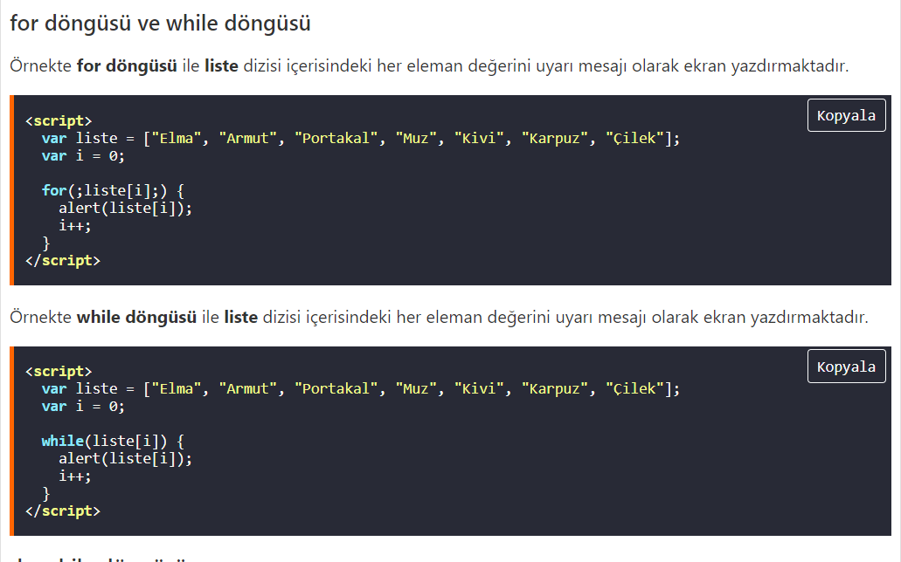
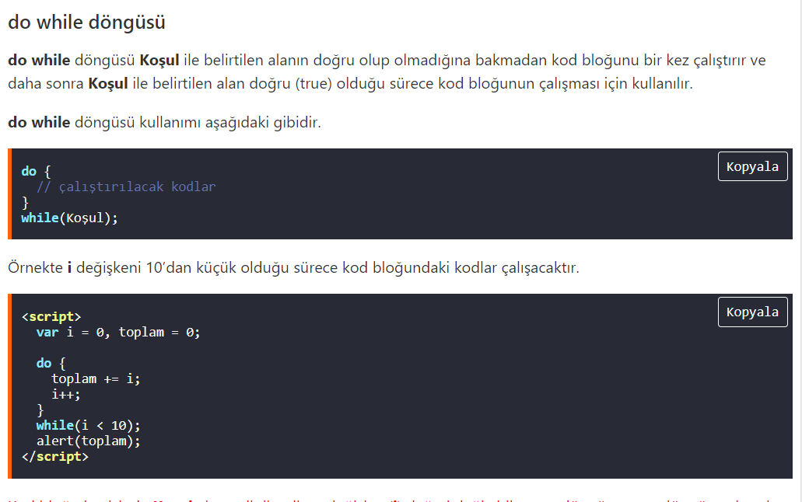

Döngüler;
JavaScript, yaygın olarak web tarayıcılarında kullanılmakta olan bir betik dilidir. JavaScript ile yazılan istemci tarafı betikler sayesinde tarayıcının kullanıcıyla etkileşimde bulunması, tarayıcının kontrol edilmesi, asenkron bir şekilde sunucu ile iletişime geçilmesi ve web sayfası içeriğinin değiştirilmesi gibi işlevler sağlanır. JavaScript, Node.js gibi platformlar sayesinde sunucu tarafında da yaygın olarak kullanılmaktadır. İlk olarak bir Netscape çalışanı olan Brendan Eich tarafından geliştirilen ve 1997 yılından beri bir ECMA standardı olan JavaScript, günümüzde Mozilla Vakfı öncülüğünde özgür yazılım topluluğu tarafından geliştirilmekte ve bakımı yapılmaktadır. Web sayfalarının görünümünün mükemmelleştirilmesi, işlevselliğinin artırılması ve dinamik web sayfaları tasarlanması amacıyla JavaScript, HTML kodu içinde gömülü olarak (embedded) kullanılabilir. JavaScript, bir programlama dili disiplini ve özelliklerine sahiptir. Aralarında isim benzerliği olmasına rağmen, Java ile JavaScript arasında teknik olarak çok önemli farklılıklar mevcuttur.
  




